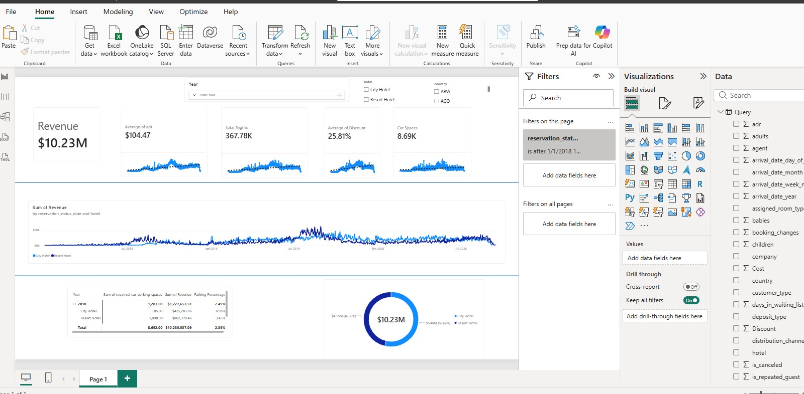
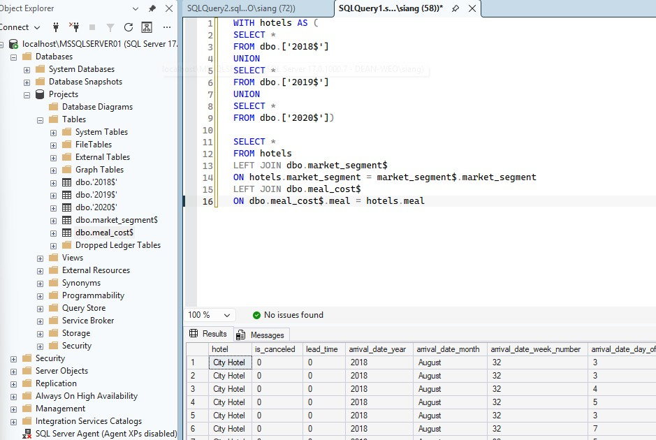
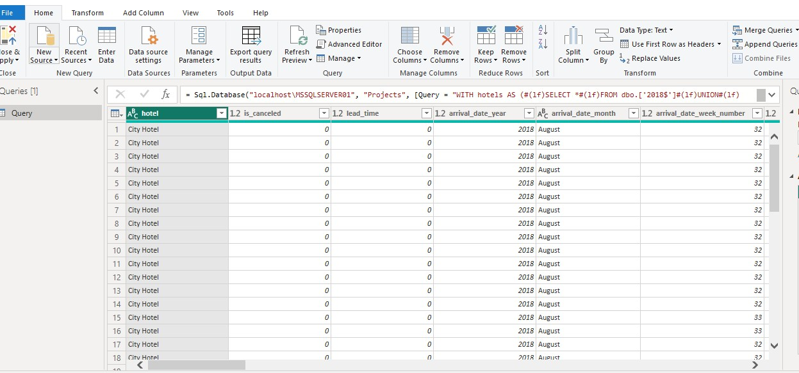
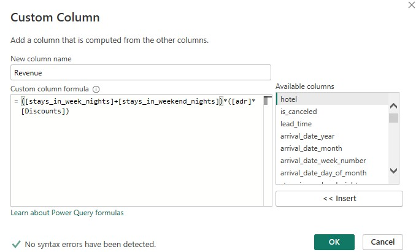

Building a Database with SQL and Creating a Dashboard
Responsive and adaptive PowerBI dashboard to gain insights of data imported into SQL database.

Overview
SQL is an excellent data extraction tool. Most platforms have some varian of SQL (some more annoying than others!). Anyway, data is prevalant in all platforms and an important part of a Data Analyst role or Developer is sometimes getting into the weeds and creating a responsive dashboard to answer functional questions.
The Challenge
Simply put, we want to respond to questions from a functional stand point using SQL and PowerBI. A good presentation must be responsive and of high quality.
The Process

The first step is importing the data into your SQL database. Now using SQL collect whatever data you need with a SELECT statement. I always follow best practice, I believe data is foundational and naming conventions, improper data structures, and bad architecture slows development down.

Import your data into PowerBI using the import wizard and paste your SELECT statement to load your data.

Here I like to add any custom calculations or inputs to PowerBI for any additional information. It's quicker than writing them up in SQL and I find it useful in this step. Lastly, you just design your dashboard. Add whatever features you want using your data set and always make it look professional and nice.
Technologies
- PowerBI
- SQL
What I Learned
I learned that in any technical role, being able to understand and provide insights on the business side of the project is a valuable skill. Sometimes you will need to take a step back and facilitate the business' needs.